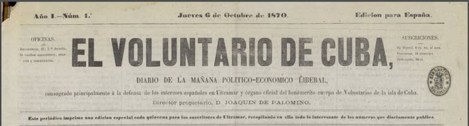
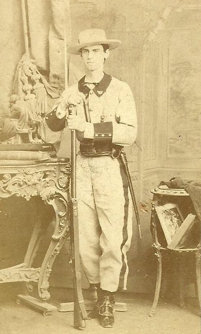

Los Hilos de Monik
El Cuerpo de Voluntarios
Publicado el 7 de julio de 2020 - 15 tweets - Hilo original en Twitter
1
Entre su caracterización en "Elpidio Valdés" y su rol en el injusto fusilamiento de los estudiantes de medicina, el Cuerpo de Voluntarios ha pasado a la historia de Cuba como una organización vil.
¿Pero, qué más sabemos de los Voluntarios?

2
El Cuerpo de Voluntarios se creó en 1855, con el propósito de aligerar la carga del ejército regular.
¿Por qué?
Pues esta fue la época de auge del anexionismo (recordemos a Narciso López) y a través de este cuerpo se pretendía dar mayor protagonismo a los peninsulares.
3
La idea era ir desplazando poco a poco a los criollos de puestos militares claves en las Milicias Disciplinadas.
Especialmente después de que algunos de ellos se involucraron en la Conspiración de la Escalera (1844) y el alzamiento de Isidoro Armenteros en Trinidad (1851)
4
Sin embargo, los Voluntarios nunca fueron 100% españoles, pues los criollos leales a España se alistaron.
Por ejemplo, Pedro Abreu, el padre de Marta Abreu (benefactora de los independentistas) organizó el Escuadrón de Voluntarios de Caballería en Santa Clara en 1855.
5
Los años previos a la Guerra de los Diez Años, los voluntarios se volvieron una fuerza de connotación política, aclara el historiador cubano Fernando Padilla.
En medio del debate con los reformistas, estos españolistas militantes ejercieron lo que ahora llamaríamos "lobby".
6
Pero fue la guerra la que los consolidó.
En Oriente, los Voluntarios estaban a cargo de proteger los ingenios.
En Occidente, de controlar las ciudades, a veces usando técnicas repudiables.
Es importante saber que la mayoría de los voluntarios eran de la clase obrera.
7
Con un ejército reducido, la administración española se vio incapaz de controlar a esta fuerza.
Y fue en estos momentos cuando se dieron los episodios del teatro Villanueva, el asalto al palacio de Aldama, el fusilamiento de los estudiantes de medicina, confiscaciones y...
8
...el exilio de más de 100,000 independentistas hacia los Estados Unidos.
Pero también hicieron otro tipo de presión.
En 1872 y 1874 se produjeron las primeras huelgas en la historia de Cuba. Cocheros, dependientes de comercio y torcedores... quienes eran Voluntarios.
9
La situación se hizo tan compleja (obreros armados y con instrucción militar) que el gobierno cedió a su favor.
Tras el Pacto del Zanjón y el establecimiento del Partido Unión Constitucional, los Voluntarios (y su conflictiva fama) poco a poco fueron perdiendo relevancia.
10
Los Voluntarios, de forma casi natural, fueron evolucionando hacia un movimiento obrero militante.
Cuando el 1 de mayo de 1890 Cuba tuvo su primera manifestación obrera en honor a los mártires de Chicago, miles de los participantes desfilaron con sus uniformes de Voluntarios
11
Fueron tambien los Voluntarios el epicentro de otra batalla política.
En 1889, el Ministro de Ultramar Manuel Becerra propuso dar derecho al voto a los criollos del Cuerpo de Voluntarios.
La negativa dio certeza a los autonomistas de que España no atendería sus demandas.
12
Al comenzar la Guerra de 1895, España se encontró con que el Cuerpo de Voluntarios que paulatinamente fue privando de protagonismo, ya no era la fuerza de apoyo que fue durante la guerra anterior.
No obstante, había más de 60,000 voluntarios y solo 15,000 soldados.
13
Weyler apenas usó a los voluntarios durante la Reconcentración.
Incluso, en algunas zonas de Pinar del Río hubo poblados de reconcentrados que eran cubanos leales a España e incluso Voluntarios.
14
La ironía es que hacia el final de la guerra, muchos de ellos (aproximadamente 1/5 parte) desertaron y se unieron a las tropas insurrectas, llevando consigo sus armamentos.
Por esas fechas, aproximadamente 27,000 criollos eran parte del Cuerpo de Voluntarios.
15
Según John Lawrence Tone, si se suman el Cuerpo de Voluntarios, los miembros de las guerrillas, los bomberos y los criollos alistados en el Ejército, se llega a la conclusión de que en la Guerra de 1895 hubo más cubanos luchando por España que por la independencia.